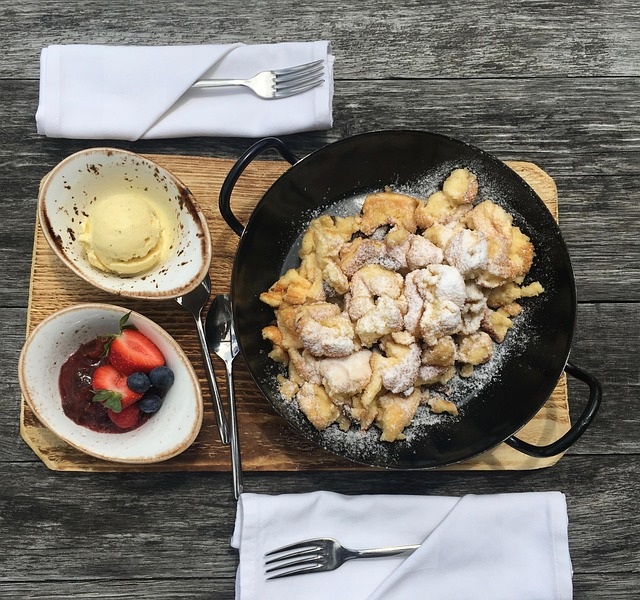

Kaiserschmarrn

Fotocredit: pixabay/ mosiunterwegs
An Austrian Treat
The Kaiserschmarrn is one of Austrias most popular sweet dishes. It is juicy, fluffy, crunchy and absolutely delicious!
Very often it is considered as a variation of the well known US-American pancake, but this is not the case! The Kaiserschmarrn has a long tradition, going back to Austrias imperial period and is usually served with home-made plum compote or apple sauce.
It is not that easy to achieve the needed fluffiness at home - but with this outstanding recipe, you will be the winner!
Ingredients
You need the following ingredients for one big portion of Kaiserschmarrn:
- 200g flour
- 3 eggs
- 100ml milk
- Sugar
- Salt
- Vanilla
- Baking soda
- Sparkling water
- Rum
- Butter
Steps
This is how the Kaiserschmarrn is made:
- Separate the egg yolks from the egg whites and beat the egg whites with some salt until they become stiff snow.
- Put the flour, egg yolks, milk, sugar, some baking soda, a pinch of salt and some vanilla into a bowl and whisk it until it becomes a thick, but still liquid patter.
- Add some sparkling water to the patter and gently whisk.
- Add the egg whites carefully to the patter. It's okay if you do see some spots of “snow” in the patter.
- Melt a big chunk of butter in a big frying pan. Add all of the patter into the pan.
- Fry the patter on low heat. Take your time, don't hurry through this process.
- When the surface of the patter starts to solidify, turn the Kaiserschmarrn around. Most likely it will break during this step, but this doesn't matter as we rip it apart anyways.
- Rip the Kaiserschmarrn into pieces and keep it in the pan until all the chunks are golden brown and crunchy.
- Add some rum and butter to give it some extra flavour and fry it about 1 more minute.
- Put the Kaiserschmarrn on a plate and dust it with powdered sugar.
You did it! You made a (hopefully) perfect Kaiserschmarrn!
Serve the Kaiserschmarrn with some fruit compote or apple sauce and you're ready to go!
Home